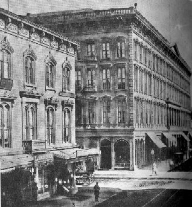

San Francisco, California
1864-1866
"I wanted to see San Francisco. I wanted to go somewhere. I wanted--I did not know what I wanted. I had the
"spring fever" and wanted change, primarily, no doubt." Mark Twain, Roughing It
Occidental Hotel
Montgomery Street

picture courtesy of Mark Twain Himself
"A truly fascinating city to live in, stately and handsome at a fair distance, but close at hand one notes that the
architecture is mostly old-fashioned, many streets are made up of decaying, smoke-grimed, wooden houses, and
the brown sand-hills towards the outskirts obtrude themselves too prominently." as quoted in Mark Twain Himself
"Here we have neither snow peaks nor cold weather, fires are never lighted and yet summer clothes are
never worn, you wear spring clothes the year round...I am taking life easy now and I mean to keep it up
for a while." letter to Jane Lampton Clemens, 9.25.1864, San Francisco, CA, as quoted in Mark Twain


Back to Virginia City | On to Angel's Camp